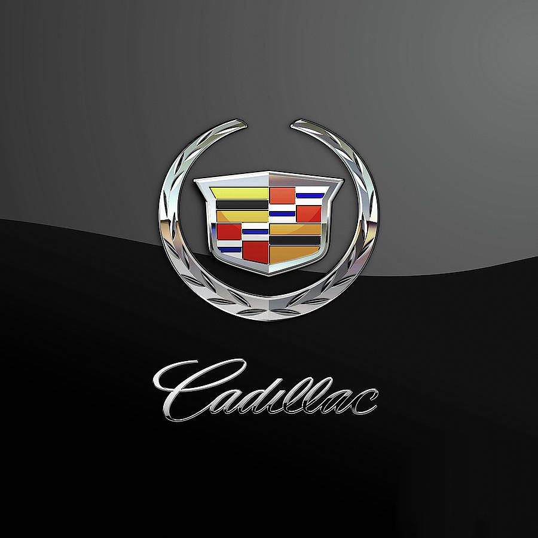
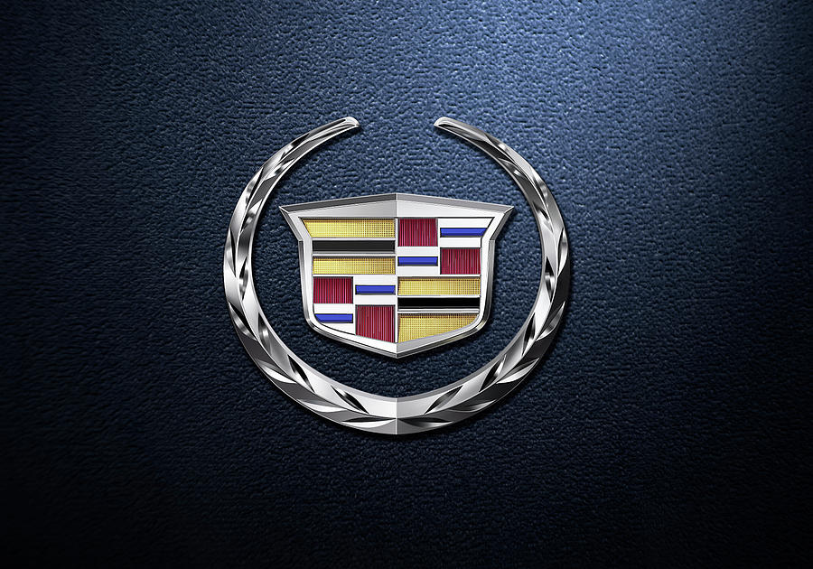

Cadillac (ˈkædɨlæk) — американский производитель автомобилей класса «люкс», принадлежащий General Motors. Автомобили «Кадиллак» продаются более чем в 50 странах и территориях, преимущественно в Северной Америке. «Кадиллак» был основан в 1902 году, его основатель, Генри Лиланд, главный механик и предприниматель, назвал компанию в честь основателя Детройта — Антуана де Ламот-Кадильяка.
С 1909 года автомобильная марка «Кадиллак» принадлежит «General Motors». В течение шести лет до этого «Кадиллак» заложил основы современного массового производства автомобилей, продемонстрировав полную взаимозаменяемость их точных деталей и зарекомендовав себя самой первой маркой американских машин высшего класса. «Кадиллак» разработал много автомобильных устройств и приспособлений, включая полную электросистему, безударную ручную коробку передач и стальную крышу. Под маркой «Кадиллак» было разработано три двигателя, один из которых (двигатель V8) задал стандарт для американской автопромышленности. Как результат этого, Кадиллак стал первой американской машиной, выигравшей престижную гонку Дьюар Трофи у Королевского Автомобильного клуба Великобритании и выдвинул лозунг «Стандарт для всего мира».
В настоящее время «Кадиллак» — второй по старшинству американский производитель автомобилей после «Бьюика» и одна из старейших автомобильных марок в мире. В зависимости от критериев оценки, «Кадиллак», возможно, старше, чем «Бьюик»; тем не менее, после ликвидации «Олдсмобиля», «Бьюик» часто называется старейшим из оставшихся производителей в США[источник не указан 506 дней]. В основном его продукция продается в США и Канаде. Кадиллак в настоящее время использует лозунг: «Жизнь, свобода и стремление», в связи с неотъемлемыми правами, упомянутыми в Декларации независимости США.

Содержание
1 История развития
1.1 Основание компании
1.2 Вклад в автомобилестроение
1.2.1 Дизайн кузова
1.2.2 Перспективные двигатели и трансмиссии
1.3 Первые автомобили
1.4 Дженерал Моторс
1.5 Великая депрессия
1.6 Послевоенные годы
1.7 1960-е годы
1.8 1970-е годы
1.9 Низкие характеристики и слабые изменения
1.9.1 Выпуск «Севиль» и уменьшение её размеров
1.10 1980-е годы
1.10.1 Синдром «Двойник с подобным двигателем»
1.10.2 Дизель V8
1.10.3 Симаррон
1.10.4 V8-6-4 и HT4100
1.10.5 Аллант
1.11 1990-е годы
1.11.1 Уменьшение размеров и «Бруэм»
1.11.2 Соревнование с «Линкольн» — Эскалейд
1.12 2000-е годы
1.13 «Эпоха искусства и науки»
1.14 Влияние на американскую культуру
2 Кадиллаки в искусстве и скульптуре
3 Модельный ряд
4 Галерея
5 Концепт-кары
6 Продажи в США[3]
7 См. также
8 Литература
9 Ссылки
10 Примечания
